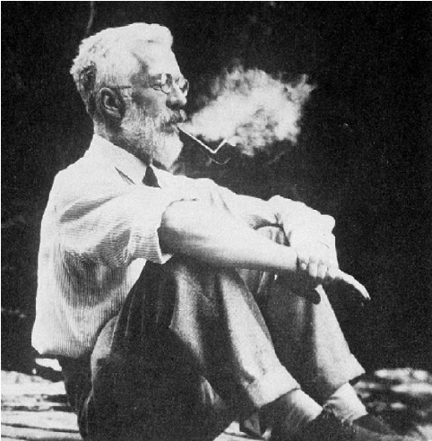

15 13.1 Goals for this chapter

In the same way a film director will view daily takes to correct potential lighting or shooting issues before they affect too much footage, it is a good idea not to wait until all the runs of an experiment have been finished before looking at the data. Intermediate data analyses and visualizations will track unexpected sources of variation and enable you to adjust the protocol. Much is known about sequential design of experiments (Mead 1990), but even in a more pragmatic setting it is important to be aware of sources of variation as they occur and adjust for them.
We have now seen many different biological datasets and data types, and methods for analyzing them. To conclude this book, we recapitulate some of the general lessons we learned. Three great pieces of good advice are:
How to analyze? R.A. Fisher, one of the fathers of experimental design (Fisher 1935) is quoted as saying: To consult the statistician after an experiment is finished is often merely to ask him to conduct a post mortem examination. He can perhaps say what the experiment died of 1. So it is important to design an experiment already with the analysis in mind. Do not wait with thinking about how to analyze the data only once they have been acquired.
When? Dailies: start with the analysis as soon as you have acquired the first data. Don’t wait until everything is collected and it’s too late to troubleshoot.
What? Start writing the paper while you’re analyzing the data. Only once you’re writing and trying to present your results and conclusions, you realize what you should have done to properly support them.
1 Presidential Address to the First Indian Statistical Congress, 1938. Sankhya 4, 14-17.
In this chapter we will:
Develop a simple categorization of what types of experiments there are and the varying amounts of control we have with each of them.
Recap how to distinguish the different types of variability: error, noise and bias.
Discuss the things that we need to worry about: confounding, dependencies, batch effects. We’ll ask the famous question: how many replicates?.
Recap the essential ideas behind mean-variance relationships and how they inform us on whether and how to transform our data.
Computational techniques and tools are essential for getting the job done. We will discuss efficient workflow design, data representation and computation.
Try to be aware of data summarization steps and questions of sufficiency in our analytical workflows - so that we don’t throw away important information in some step “upstream”, which is then missing and making us trouble downstream.
15.1 13.2 Types of experiments
15.1.0.1 The art of “good enough”.
We need experimental design in order to deal with the fact that our resources are finite, our instruments not perfect, and that the real world is complicated. We want to get the the best possible outcome nonetheless. This invariably results in hard decisions and tradeoffs. Experimental design aims to rationalize such decisions. Our experimental interventions and our measurement instruments have limited precision and accuracy; often we don’t know these limitations at the outset and have to collect preliminary data to estimate them. We may only be able to observe the phenomenon of interest indirectly rather than directly. Our treatment conditions may have undesired but hard to avoid side effects, our measurements may be overlaid with interfering signals or “background noise”. Sample sizes are limited for practical and economic reasons. There is little point in prescribing unrealistic ideals – we need to make choices that are pragmatic and feasible. A quote from (Bacher and Kendziorski 2016) explains this clearly: “Generally speaking, a well-designed experiment is one that is sufficiently powered and one in which technical artifacts and biological features that may systematically affect measurements are balanced, randomized or controlled in some other way in order to minimize opportunities for multiple explanations for the effect(s) under study.”
To start with, let us discuss the major different types of experiments, since each of them requires different approaches.
In a controlled experiment , we have control over all relevant variables: the (model) system under study, the environmental conditions, the experimental readout. For instance, we could have a well-characterized cell line growing in laboratory conditions on defined media, temperature and atmosphere, we’ll administer a precise amount of a drug, and after 72h we measure the activity of a specific pathway reporter.
In a study , we have less control: important conditions that may affect the measured outcome are not under control of the researcher, usually because of ethical concerns or logistical constraints. For instance, in an ecological field study, this could be the weather, the availability of nutrition resources or the activity of predators. In an observational study , even the variable of interest is not controlled by the researcher. For instance, in a clinical trial, this might be the assignment of the individual subjects to groups. Since there are many possibilities for confounding (Section 13.4.1), interpretation of an observational study can be difficult. Here’s where the old adage “correlation is not causation” appertains.
In a randomized controlled trial , we still have to deal with lack of control over many of the factors that impact the outcome, but we control assignment of the variable of interest (say, the type of treatment in a clinical trial), therefore we can expect that –with high enough sample size– all the nuisance effects average out and the observed effect can really be causally assigned to the intervention. Such trials are usually prospective 2, i.e., the outcome is not known at the time of the assignment of the patients to the groups.
2 The antonym is retrospective; observational studies can be prospective or retrospective.
A meta-analysis is an observational study on several previous experiments or studies. One motivation of a meta-analysis is to increase power by increasing effective sample size. Another is to overcome the limitations of individual experiments or studies, which might suffer from researcher bias or other biases, be underpowered, or can otherwise be flawed or random. The hope is that by pooling results from many studies, such “study-level” problems average out.
15.2 13.3 Partitioning error: bias and noise

Statisticians use the term error for any deviations of a measured value from the true value. This is different from the everyday use of the word. In statistics, error is an unavoidable aspect of life. It is not “bad”, it is something to be cherished, reckoned with, tamed and controlled.
We broadly distinguish between two types of error. The first, which we call noise , “averages out” if we just perform enough replicates. The second, which we call bias , remains; it even becomes more apparent with more replication. Recall the bull’s eye in Figure 12.18: in the lower panel, there is a lot of noise, but no bias, and the center of the cloud of points is in the right place. In the upper panel, there is much less noise, but bias. No amount of replication will remedy the fact that the center of the points is in the wrong place.
Bias is more difficult to deal with than noise: noise is easily recognized just from looking at replicates, and it averages out as we analyze more and more replicates. With bias, it can be hard to even recognize that it is there, and then we need to find ways to measure it and adjust for it, usually with some quantitative model.
__
Question 13.1
Give two examples in previous chapters where we have modeled bias in high throughput data.
__
Solution
__
For instance, in Chapter 8, we modeled the sampling noise with the gamma-Poisson distribution, we estimated sequencing depth bias with the library size factors and took it into account when testing for differential expression. We also modeled sampling biases caused by the two different protocols used (single-end, paired-end) by introducing a blocking factor into our generalized linear model.
15.2.1 13.3.1 Error models: noise is in the eye of the beholder
The efficiency of most biochemical or physical processes involving DNA- polymers depends on their sequence content. For instance, occurrences of long homopolymer stretches, palindromes, overall or local GC content can modify the efficiency of PCR, or the dynamics of how the polymer is being pulled through a nanopore. The size and nature of such effects is challenging to model. They depend in subtle ways on factors like concentration, temperature, enzyme used, etc. So: when looking at RNA-Seq data, should we treat GC content as noise or as bias?
__
Question 13.2
How does the DESeq2 method address this issue?
__
Solution
__
DESeq2 offers both options. If size factors are used to model per-sample sampling bias, then such effects are not explicitly modeled.
Note: The assumption is then that, for each gene, any such bias would effect the counts in the same way across all samples, so that for the purpose of differential expression analysis, it cancels out. To the extent that such effects are sample-specific, they are treated as noise. However, as described in its vignette, DESeq2 also allows specifying sample- and gene-dependent normalization factors for a matrix, and these are intended to contain explicit estimates of such biases.
Remember that the noun sample here, by convention, refers to one column of the count matrix, e.g., one sequencing library corresponding to one replicate of one biological condition. The same term (here as the verb form sampling) is also used in its more general, statistical sense, as in “a sample of data from a distribution”. There is no easy way around this ambiguity, so we just need to be aware of it.
Formal error models can help us decompose the variability into noise and bias. A standard decomposition you may have encountered is called ANOVA (ANalysis Of VAriance). In these types of models, variability is measured by sums of squares and aportioned according to its origin. For instance, when doing supervised classification in a linear discriminant analysis (LDA) in Chapter 12, we computed the total sum of squares \(C\) as
\[ C_{} = C_{} + C_{}. \]
However, there are usually multiple ways of doing such a decomposition: an effect that at one stage is considered within-group variation (noise) might be considered a between-groups effect once the right (sub)groups are assigned.
Maybe this is akin to the vision of “personalized medicine”: better patient stratification that converts within group variation (incl. unsuccessful or unnecessary treatments) into between groups variation (where every group gets exactly what they need).
15.2.1.1 Determinism versus chance.
{kind=link}
Figure 13.1: A carefully constructed coin tossing machine can be made to provide deterministic coin flips.
Everyone thinks of the outcome of a coin toss as random, thus a perfect example of noise. But if we meticulously registered the initial conditions of the coin flip and solved the mechanical equations, we could predict which side has a higher probability of coming up (Diaconis, Holmes, and Montgomery 2007).
So, rather than asking whether a certain effect or process is random or deterministic, it is more fruitful to say whether we care to model it deterministically (as bias), or whether we ignore the details, treat it as stochastic, and use probabilistic modeling (noise). In this sense, probabilistic models are a way of quantifying our ignorance, taming our uncertainty.
15.2.1.2 Latent factors.
Sometimes we explicitly know about factors that cause bias, for instance, when a different reagent batch was used in different phases of the experiments. We call this batch effects (Jeffrey T. Leek et al. 2010). At other times, we may expect that such factors are at work but have no explicit record of them. We call these latent factors. We can treat them as adding to the noise, and in Chapter 4 we saw how to use mixture models to do so. But this may not be enough: with high- dimensional data, noise caused by latent factors tends to be correlated, and this can lead to faulty inference (Jeffrey T. Leek et al. 2010). The good news is that these same correlations can be exploited to estimate latent factors from the data, model them as bias and thus reduce the noise (Jeffrey T. Leek and Storey 2007; Stegle et al. 2010).
15.2.2 13.3.2 Biological versus technical replicates
__
Question 13.3
Imagine you want to test whether a weight loss drug works. Which of the following study designs would you use:
A person is weighed on milligram precision scales, with 20 replicates. He follows the diet, and four weeks later, he is weighed again, with 20 replicates.
Ten people weigh themselves once on their bathroom scales and report the number. Four weeks later, they weigh themselves and report again.
Surely the first option must be better since it has 20 replicates on a very precise instrument rather than only ten on an older piece of equipment?
__
Solution
__
What we have here is a (placative) instance of the difference between technical versus biological replicates. The number of replicates is less important than what types of variation are allowed to affect them. The 20 replicates in the first design are wasted on re-measuring something that we already know with more than enough precision. Whereas the far more important question –how does the effect generalize to different people– starts to be addressed with the second design, although in practice more people would be needed.
Note: Inference or generalizations can only be made to a wider population if we have a representative, randomized sample of that population in our study. In the first case if a weight loss occurs, one could only infer about that person at that time.
Analogous questions arise in biological experimentation, e.g., do you rather do five replicates on the same cell line, or one replicate each on three different cell lines?
__
Question 13.4
For reliable variant calling with the sequencing technology used by the 1000 Genomes project, one needs about \(30\) coverage per genome. However, the average depth of the data produced was 5.1 for 1,092 individuals (1000 Genomes Project Consortium 2012). Why was that study design chosen?
__
Solution
__
The project’s aim was finding common genetic variants, i.e., finding variants that have a prevalence of more than, say, 1% in the population. It was not to call high-confidence genotypes of individual people. Therefore, it was more cost-efficient to sample more individuals each with low coverage (say, 1092 individuals at 5x) than fewer individuals with high coverage (say, 182 at 30x). In this way, common variants would still be found with \(>=30\) coverage (\(1092 % = 55\)), since they would be present in several of the 1000 people, but more of them would be found, and there would be more precise estimates of their population frequency.
The technical versus biological replicates terminology has some value, but is often too coarse. The observed effect may or may not be generalizable at many different levels: different labs, different operators within one lab, different technologies, different machines from the same technology, different variants of the protocol, different strains, litters, sexes, individual animals, and so forth. It’s better to name the levels of replication more explicitly.
15.2.3 13.3.3 Units vs. fold-changes
Measurements in physics are usually reported as multiples of SI3 units, such as meters, kilograms, seconds. A length measured in meters by a lab in Australia using one instrument is directly comparable to one measured a year later by a lab in Canada using a different instrument, or by alien scientists in a far-away galaxy. In biology, it is rarely possible or practical to make measurements that are as standardized. The situation here is more like that where human body parts (feets, inches, etc.) are used for length measurements, and where the size of these body parts is even different in different towns and countries, let alone galaxies.
3 International System of Units (French: Système International d’Unités)
Biologists often report measurements as multipes of (i.e., fold changes with regard to) some local, more or less ad hoc reference. The challenge with this is that fold changes and proportions are ratios. The denominator is a random variable (as it changes from lab to lab and probably from experiment to experiment), which can create high instability and very unequal variances between experiments; see the sections on transformations and sufficiency a little later in this chapter. Even when seemingly absolute values exist (e.g., TPKM values in an RNA-Seq experiment), due to experiment-specific sampling biases they do not translate into universal units, and they often lack an indication of their precision.
15.2.4 13.3.4 Regular and catastrophic noise
Regular noise can be modelled by simple probability models such as independent normal distributions, Poissons, or mixtures such as gamma–Poisson or Laplace. We can use relatively straightforward methods to take such noise into account in our data analyses and to compute the probability of extraordinarily large or small values. In the real world, this is only part of the story: measurements can be completely off scale (a sample swap, a contamination or a software bug), and they can go awry all at the same time (a whole microtiter plate went bad, affecting all data measured from it). Such events are hard to model or even correct for – our best chance to deal with them is data quality assessment, outlier detection and documented removal.
15.3 13.4 Basic principles in the design of experiments
15.3.1 13.4.1 Confounding
{kind=link}
Figure 13.2: Comparison of a (hypothetical) biomarker between samples from disease and healthy states. If we are only given the information shown in the left panel, we might conclude that this biomarker performs well in detecting the disease. If, in addition, we are told that the data were acquired in two separate batches (e.g., different labs, different machines, different time points) as indicated in the panel on the right hand side, the conclusion will be different.
__
Question 13.5
Consider the data shown in Figure 13.2. How can we decide whether the observed differences in the biomarker level are due to disease vs. healthy, or due to the batch?
__
Solution
__
It is impossible to know from these data: the two variables are confounded.
Confounding need not only be between a biological and a technical variable, it can also be more subtle. For instance, the biomarker might have nothing to do with the disease directly – it might just be a marker of a life style that causes the disease (as well as other things), or of an inflammation that is caused by the disease (as well as by many other things), etc.
15.3.2 13.4.2 Effect size and replicates
{kind=link}
Figure 13.3: Confounding is the reason that one of the seven rules of experimental design listed by the Persian physician-scientist Abu ’Ali al- Husayn ibn Sina (Avicenna) around AD 1020 was “to study one possible cause of a disease at a time” (Stigler 2016).
The effect size is the difference between the group centers, as shown by the red arrow in Figure 13.4. A larger sample size in each group increases the precision with which the locations of each group and the effect size are known, thus increasing our power to detect a difference (Figure 13.5). On the other hand, the performance of the biomarker as a diagnostic for distinguishing individual samples between healthy and disease states depends on the within-group distributions (and the relative prevalences of both states), and is not improved by replication.
{kind=link}
Figure 13.4: The red arrow shows the effect size, as measured by the difference between the centers of the two groups. Here we locate the centers by the medians; sometimes the mean is used.

Figure 13.5: On the left, the boxplot was created with samples of size 6. On the right the sample sizes are 60. The measurements have the same underlying error distribution in both cases.
15.3.3 13.4.3 Clever combinations: Hotelling’s weighting example
To get the best data out of available resources, capitalizing on cancellations and symmetries is an important aspect. Here is a famous illustration of how Hotelling devised an improved weighing scheme. Suppose we are given a set of eight unknown weights \(= (_1, …,_8)\). In the following code, we simulate such a set of true weights using R’s random number generator.
{kind=link}
Figure 13.6: The example in this section uses the pharmacist’s balance weighing analogy introduced by Yates and developed by Hotelling (1944) and Mood (1946).
theta = round((2 * sample(8, 8) + rnorm(8)), 1)
theta __
[1] 10.7 13.4 16.4 3.9 8.5 16.0 1.2 4.4Method 1 : Naïve method, using eight weighings. Suppose we use a pharmacist’s balance (Figure 13.6) that weighs each weight \(_i\) individually, with errors distributed normally with a standard deviation of 0.1. We compute the vector of errors errors1 and their sum of squares as follows:
X = theta + rnorm(length(theta), 0, 0.1)
X __
[1] 10.513279 13.268145 16.507673 3.881881 8.395974 16.073952 1.131341
[8] 4.289040
errors1 = X - theta
errors1 __
[1] -0.18672051 -0.13185519 0.10767279 -0.01811869 -0.10402607 0.07395242
[7] -0.06865871 -0.11095993
sum(errors1^2)__
[1] 0.09748857Method 2 : Hotelling’s method, also using eight weighings. The method is based on a Hadamard matrix, which we compute here.
library("survey")
h8 = hadamard(6)
coef8 = 2*h8 - 1
coef8 __
[,1] [,2] [,3] [,4] [,5] [,6] [,7] [,8]
[1,] 1 1 1 1 1 1 1 1
[2,] 1 -1 1 -1 1 -1 1 -1
[3,] 1 1 -1 -1 1 1 -1 -1
[4,] 1 -1 -1 1 1 -1 -1 1
[5,] 1 1 1 1 -1 -1 -1 -1
[6,] 1 -1 1 -1 -1 1 -1 1
[7,] 1 1 -1 -1 -1 -1 1 1
[8,] 1 -1 -1 1 -1 1 1 -1We use coef8 as the coefficients in a new weighing scheme, as follows: the first column of the matrix tells us to put all the weights on one side of the balance and to weigh that. Call the result Y[1]. The second column tell us to place weights 1, 3, 5, 7 on one side of the balance and weights 2, 4, 6, 8 on the other. We then measure the difference and call the result Y[2]. And so forth, for all eight columns of coef8. We can express the necessary computations in matrix multiplication form as below.
Y = theta %*% coef8 + rnorm(length(theta), 0, 0.1)__As in the first method, each of the eight weight measurements has a normal error with standard deviation of 0.1.
__
Question 13.6
Check that
coef8is -up to an overall factor- an orthogonal matrix (\(C^t C = \) for some \(\)).Check that if we multiply
thetawithcoef8timescoef8transposed and divide by 8, we obtainthetaagain.
__
Solution
__
coef8 %*% t(coef8)__
[,1] [,2] [,3] [,4] [,5] [,6] [,7] [,8]
[1,] 8 0 0 0 0 0 0 0
[2,] 0 8 0 0 0 0 0 0
[3,] 0 0 8 0 0 0 0 0
[4,] 0 0 0 8 0 0 0 0
[5,] 0 0 0 0 8 0 0 0
[6,] 0 0 0 0 0 8 0 0
[7,] 0 0 0 0 0 0 8 0
[8,] 0 0 0 0 0 0 0 8
theta %*% coef8 %*% t(coef8) / ncol(coef8)__
[,1] [,2] [,3] [,4] [,5] [,6] [,7] [,8]
[1,] 10.7 13.4 16.4 3.9 8.5 16 1.2 4.4We combine these results to estimate theta using the orthogonality of coef8.
thetahat = Y %*% t(coef8) / ncol(coef8)__Since we know the true \(\), we can compute the errors and their sum of squares.
errors2 = as.vector(thetahat) - theta
errors2 __
[1] -0.005213746 0.025216488 0.003201562 0.033880188 -0.029459127
[6] -0.043173774 0.083202870 -0.025818188
sum(errors2^2)__
[1] 0.01214228We see that the sum of squares here is substantially smaller than that of the first procedure. Were we just lucky?
__
Question 13.7
Repeat the above experiment B = 10000 times, each time using a different
theta, and look at the sampling distributions of sum of squared errors in both schemes.What do you think the relationship between the two variances is?
__
Solution
__
B = 10000
tc = t(coef8) / ncol(coef8)
sse = replicate(B, {
theta = round((2 * sample(8, 8)) + rnorm(8), 1)
X = theta + rnorm(length(theta), 0, 0.1)
err1 = sum((X - theta)^2)
Y = coef8 %*% theta + rnorm(length(theta), 0, 0.1)
thetahat = tc %*% Y
err2 = sum((thetahat - theta)^2)
c(err1, err2)
})
rowMeans(sse)__
[1] 0.079591221 0.009954419
ggplot(tibble(lr = log2(sse[1, ] / sse[2, ])), aes(x = lr)) +
geom_histogram(bins = 50) +
geom_vline(xintercept = log2(8), col = "orange") +
xlab("log2 ratio of SSE, Method 1 vs 2")__{kind=link}
Figure 13.7: Logarithm (base 2) of the ratios of sum of squared error for the two methods. The vertical orange line corresponds to 8.
The second scheme is more efficient than the first by a factor of 8 because the errors generated by the measurement have a sum of squares that is 8 times lower (Figure 13.7).
This example shows us that when several quantities are to be ascertained there is an opportunity to increase the accuracy and reduce the cost by combining measurements in one experiment and making comparisons between similar groups.
Ibn Sina’s rule that an optimal design can only vary one factor at a time was superseded in the 20th century by RA Fisher. He realized that one could modify the factors in combinations and still come to a conclusion—sometimes, an even better conclusion, as in the weighing example—as long as the contrasts were carefully designed.
{kind=link}
Figure 13.8: On the left, two samples each of size 6 are being compared. On the right, the same data are shown, but colored by the time of data collection. We note a tendency of the data to fall into blocks according to these times. Because of this, comparison between the groups is diluted. This effect can be mitigated by comparing within times, i.,e., by blocking into three groups. Paired analysis, such as demonstrated in Questions 13.8—13.10, is a special case of blocking.
15.3.4 13.4.4 Blocking and pairing
Darwin suspected that corn growth is affected by the composition of the soil and the humidity in the pots. For this reason, when he wanted to compare plants grown from cross-pollinated seeds to plants grown from self-pollinated seeds, he planted one seedling of each type in each of 15 pots. Each pot in Darwin’s Zea Mays experiment is a block, only the factor of interest (pollination method), called the treatment , is different within each block (Figure 13.9).
{kind=link}
Figure 13.9: A paired experiment is the simplest case of blocking.
In fact, RA Fisher criticized Darwin’s experiment because he systematically put the cross-pollinated plants on the same side of the pot. This could have induced confounding of a “side” effect with the cross effect, if one side of the pot received more sunlight for instance. It would have been preferable to randomize the side of the pot, e.,g., by flipping a coin.
Block what you can, randomize what you cannot.
(George Box, 1978)
15.3.4.1 Comparing a paired versus an unpaired design
When comparing various possible designs, we do power simulations similar to what we saw in Chapter 1. Let’s suppose the sample size is 15 in each group and the effect size is 0.2. We also need to make assumptions about the standard deviations of the measurements, here we suppose both groups have the same sd=0.25 and simulate data:
n = 15
effect = 0.2
pots = rnorm(n, 0, 1)
noiseh = rnorm(n, 0, 0.25)
noisea = rnorm(n, 0, 0.25)
hybrid = pots + effect + noiseh
autoz = pots + noisea ____
Question 13.8
Perform both a simple \(t\)-test and a paired \(t\)-test. Which is more powerful in this case?
__
Solution
__
t.test(hybrid, autoz, paired = FALSE)__
Welch Two Sample t-test
data: hybrid and autoz
t = 0.77183, df = 26.012, p-value = 0.4472
alternative hypothesis: true difference in means is not equal to 0
95 percent confidence interval:
-0.3145706 0.6928591
sample estimates:
mean of x mean of y
0.5073519 0.3182076
t.test(hybrid, autoz, paired = TRUE)__
Paired t-test
data: hybrid and autoz
t = 1.8783, df = 14, p-value = 0.08133
alternative hypothesis: true mean difference is not equal to 0
95 percent confidence interval:
-0.02683705 0.40512561
sample estimates:
mean difference
0.1891443 Maybe we were just lucky with our simulated data here?
__
Question 13.9
Check which method is generally more powerful. Repeat the above computations \(1000\) times and compute the average probability of rejection for these 1000 trials, using a false positive rate \(\).
__
Solution
__
B = 1000
alpha = 0.05
what = c(FALSE, TRUE)
pvs = replicate(B, {
pots = rnorm(n, 0, 1)
noiseh = rnorm(n, 0, 0.25)
noisea = rnorm(n, 0, 0.25)
hybrid = pots + effect + noiseh
autoz = pots + noisea
vapply(what,
function(paired)
t.test(hybrid, autoz, paired = paired)$p.value,
double(1)) |> setNames(paste(what))
})
rowMeans(pvs <= alpha)__
FALSE TRUE
0.000 0.532 We can compare the p-values obtained using both methods (Figure 13.10).
tidyr::pivot_longer(as.data.frame(t(pvs)), cols = everything(), names_to = "paired") |>
ggplot(aes(x = value, fill = paired)) +
geom_histogram(binwidth = 0.01, boundary = 0, alpha = 1/3)__
Figure 13.10: Results from the power calculation, comparing the p-value distributions from the ordinary unpaired and the paired \(t\)-test.
__
Question 13.10
Write a function that compares the power of the two types of tests for different values of the effect size, sample size, size of the pot effects (as measured by their standard deviation), noise standard deviation and sample size.
Use your function to find out which of the standard deviations (pots or noise) has the largest effect on the improvement produced by pairing for \(n=15\).
How big should \(n\) be to attain a power of 80% if the two standard deviations are both 0.5?
__
Solution
__
powercomparison = function(effect = 0.2, n = 15, alpha = 0.05,
sdnoise, sdpots, B = 1000) {
what = c(FALSE, TRUE)
pvs = replicate(B, {
pots = rnorm(n, 0, sdpots)
noiseh = rnorm(n, 0, sdnoise)
noisea = rnorm(n, 0, sdnoise)
hybrid = pots + effect + noiseh
autoz = pots + noisea
vapply(what,
function(paired)
t.test(hybrid, autoz, paired = paired)$p.value,
double(1)) |> setNames(paste(what))
})
rowMeans(pvs <= alpha)
}__Here are a few simulations showing that when the pot effects are small compared to the noise standard deviation, pairing hardly makes a difference. If the pot effects are large, then pairing does make a big difference.
powercomparison(sdpots = 0.5, sdnoise = 0.25)__
FALSE TRUE
0.034 0.533
powercomparison(sdpots = 0.25, sdnoise = 0.25)__
FALSE TRUE
0.242 0.524
powercomparison(sdpots = 0.1, sdnoise = 0.25)__
FALSE TRUE
0.510 0.534 For 100 plants of each type and both standard deviation at 0.5, the power of the paired test is about 80%.
powercomparison(sdpots = 0.5, sdnoise = 0.5, n = 100)__
FALSE TRUE
0.513 0.796 __
Question 13.11
Paired designs take into account a natural pairing of the observations — for instance, twin studies, or studies of patients before and after a treatment. What can be done when pairing is not available?
__
Solution
__
Matched designs try to create pairs of subjects that have as much similarity as possible through matching age, sex, background health etc. One is treated, the other serves as a control.
A balanced design is an experimental design where all the different factor combinations have the same number of observation replicates. The effect of each factor is identifiable. If there are nuisance factors, it is good to make sure they are balanced with the factors of interest. Sometimes this is inconvenient or impractical for logistic or economic reasons – but in such cases analysts are on thin ice and need to proceed with caution.
15.3.4.2 Randomization
Often we don’t know which nuisance factors will be important, or we cannot plan for them ahead of time. In such cases, randomization is a practical strategy: at least in the limit of large enough sample size, the effect of any nuisance factor should average out.
Randomization can also help reduce unconscious bias. For instance, if the samples from one of the groups are extremely hard to come by, we might be tempted to be extra careful when handling them, compared to samples from the other groups. Unfortunately this might bias the measurement outcomes and thus invalidate the comparison. See Senn (2004) for an extensive discussion of some of the pitfalls that occur when trying to improve on simple randomization.
15.3.5 13.4.5 How many replicates do I need?

Beware of underpowered me-too studies.
In Section 1.4.1 we showed a simulation experiment calculating how many nucleotides were necessary to achieve a 80% true positive rate, given that we knew the alternative. Now, recall the discussion of experiments versus studies from Section 13.2. For the cell line experiment, we might get the correct result already from one replicate; usually we’ll do two or three to be sure. On the other hand, for a study comparing the effect of two alternative drugs on patients, our intuition tells us that there is so much uncontrolled variability that we’ll likely need dozens (if not more) patients until we can be sure about the result. The number of replicates needed is highly context specific. It depends on the amount of uncontrolled variability and the effect size. A pragmatic approach is to check out previous successful (or unsuccessful) experiments or studies that did something comparable and use simulations, subsampling or bootstrapping to get an estimate of the planned study’s power.
15.3.5.1 Power depends on sample sizes, effect sizes and variability.
 for differences, we rarely have a precise idea of what effect size to expect. However, even so, power calculations are useful for order-of-magnitude calculations, or for qualitative comparisons such as shown in this section for paired versus unpaired tests. Source: Wikimedia CH."){kind=link}
Figure 13.11: The elephant in the room with power calculations is the effect size. Especially in ’omics studies, when we are screening thousands of genes (or other features) for differences, we rarely have a precise idea of what effect size to expect. However, even so, power calculations are useful for order-of-magnitude calculations, or for qualitative comparisons such as shown in this section for paired versus unpaired tests. Source: Wikimedia CH.
The package pwr provides functions for doing the standard power calculations. There are always four quantities involved in these computations: sample size, effect size, significance level (false positive rate) and the power itself which is the probability of rejecting a hypothesis when you should (true positive rate). The functions pwr.2p.test, pwr.chisq.test, pwr.f2.test provide the calculations for tests of two proportions, the chisquared test and general linear tests respectively.
Here is an example of the power calculcation for a two sample \(t\)-test with \(n=15\). The function requires several arguments:
library("pwr")
str(pwr.t.test)__
function (n = NULL, d = NULL, sig.level = 0.05, power = NULL, type = c("two.sample",
"one.sample", "paired"), alternative = c("two.sided", "less", "greater")) If you call the function with a value for power and effect size, it will return the sample size needed, or if you specify the sample size and effect size, it returns the power.
pwr.t.test(n = 15, d = 0.4, sig.level = 0.05, type = "two.sample")__
Two-sample t test power calculation
n = 15
d = 0.4
sig.level = 0.05
power = 0.1848496
alternative = two.sided
NOTE: n is number in *each* group
pwr.t.test(n = 15, d = 0.4, sig.level = 0.05, type = "paired")__
Paired t test power calculation
n = 15
d = 0.4
sig.level = 0.05
power = 0.3031649
alternative = two.sided
NOTE: n is number of *pairs*If we want to know what sample size would be required to detect a given effect size:
pwr.t.test(d = 0.4, sig.level = 0.05, type = "two.sample", power=0.8)__
Two-sample t test power calculation
n = 99.08032
d = 0.4
sig.level = 0.05
power = 0.8
alternative = two.sided
NOTE: n is number in *each* group
pwr.t.test(d = 0.4, sig.level = 0.05, type = "paired", power=0.8)__
Paired t test power calculation
n = 51.00945
d = 0.4
sig.level = 0.05
power = 0.8
alternative = two.sided
NOTE: n is number of *pairs*We see that we would need about twice as many observations for the same power when not using a paired test.
15.3.5.2 Effective sample size
A sample of independent observations is more informative than the same number of dependent observations. Suppose you want to do an opinion poll by knocking at people’s doors and asking them a question. In the first scenario, you pick \(n\) people at \(n\) random places throughout the country. In the second scenario, to save travel time, you pick \(n/3\) random places and then at each of these interview three people who live next door to each other. In both cases, the number of people polled is \(n\), but if we assume that people living in the same neighborhood are more likely to have the same opinion, the data from the second scenario are (positively) correlated. To explore this, let’s do a simulation.
doPoll = function(n = 100, numPeoplePolled = 12) {
opinion = sort(rnorm(n))
i1 = sample(n, numPeoplePolled)
i2 = sample(seq(3, n, by = 3), numPeoplePolled / 3)
i2 = c(i2, i2 - 1, i2 - 2)
c(independent = mean(opinion[i1]), correlated = mean(opinion[i2]))
}
responses = replicate(5000, doPoll())
tidyr::pivot_longer(as.data.frame(t(responses)),
cols = everything(), names_to = "design") |>
ggplot(aes(x = value, col = design)) + geom_density() +
geom_vline(xintercept = 0) + xlab("Opinion poll result")__
Figure 13.12: Density estimates for the polling result using the two sampling methods. The correlated method has higher spread. The truth is indicated by the vertical line.
There are 100 people in the country, of which in the first approach (i1) we randomly sample 12. In the second approach, we sample 4 people as well as two neighbors for each (i2). The “opinion” in our case is a real number, normally distributed in the population with mean 0 and standard deviation 1. We model the spatio-sociological structure of our country by sorting the houses from most negative to most positive opinion in the first line of the doPoll function. The output is shown in Figure 13.12.
15.4 13.5 Mean-variance relationships and variance-stabilizing transformations
In Chapters 4 and 8 we saw examples for data transformations that compress or stretch the space of quantitative measurements in such a way that the measurements’ variance is more similar throughout. Thus the variance between replicate measurements is no longer highly dependent on the mean value.
The mean-variance relationship of our data before transformation can in principle be any function, but in many cases, the following prototypic relationships are found, at least approximately:
constant: the variance is independent of the mean, \(v(m)=c\).
Poisson: the variance is proportional to to the mean, \(v(m)=am\).
quadratic: the standard deviation is proportional to the mean, therefore the variance grows quadratically, \(v(m)=bm^2\).
Here \(v(m)\) is the function that describes the trend of the variance \(v\) as a function of the mean \(m\). The real numbers \(a, b, c\) parameterize factors affecting the variance besides the mean.
__
Question 13.12
Give examples for biological assays or measurement technologies whose data show these types of mean-variance relationships.
Real data can also be affected by a combination of these. For instance, with DNA microarrays, the fluorescence intensities are subject to a combination of background noise that is largely independent of the signal, and multiplicative noise whose standard deviation is proportional to the signal (Rocke and Durbin 2001). Therefore, the mean-variance relationship is \(v(m)=bm^2+c\). For bright spots (large \(m\)), the multiplicative noise dominates (\(bm^2\)), whereas for faint ones, the background \(c\).
__
Question 13.13
What is the point of applying a variance-stabilizing transformation?
__
Solution
__
Analyzing the data on the transformed scale tends to:
Improve visualization, since the physical space on the plot is used more “fairly” throughout the range of the data. A similar argument applies to the color space in the case of a heatmap.
Improve the outcome of ordination methods such as PCA or clustering based on correlation, as the results are not so much dominated by the signal from a few very highly expressed genes, but more uniformly from many genes throughout the dynamic range.
Improve the estimates and inference from statistical models that are based on assuming identically distributed (and hence, homoskedastic) noise.
15.5 13.6 Data quality assessment and quality control
We distinguish between data quality assessment (QA) –steps taken to measure and monitor data quality– and quality control (QC) –removing bad data. These activities pervade all phases of an analysis, from assembling the raw data over transformation, summarization, model fitting, hypothesis testing or screening for “hits” to interpretation. QA-related questions include:
How do the marginal distributions of the variables look (histograms, ECDF plots)?
How do their joint distributions look (scatter plots, pairs plot)?
How well do replicates agree (as compared to different biological conditions)? Are the magnitudes of the differences between several conditions plausible?
Is there evidence of batch effects? These could be of a categorical (stepwise) or continuous (gradual) nature, e.g.. due to changes in experimental reagents, protocols or environmental factors. Factors associated with such effects may be explicitly known, or unkown and latent , and often they are somewhere in between (e.g., when a measurement apparatus slowly degrades over time, and we have recorded the times, but don’t really know exactly at what time the degradation is how bad).
For the last two sets of questions, heatmaps, principal component plots and other ordination plots (as we have seen in Chapters 7 and 9) are useful.
 quote: “If I had asked people what they wanted, they would have said faster horses.” expresses the view of quality as fitness for purpose, versus adherence to specifications. (Source: Ford)"){kind=link}
Figure 13.13: Henry Ford’s (possibly apocryphal) quote: “If I had asked people what they wanted, they would have said faster horses.” expresses the view of quality as fitness for purpose , versus adherence to specifications. (Source: Ford)
It’s not easy to define quality , and the word is used with many meanings. The most pertinent for us is fitness for purpose 4, and this contrasts to other definitions of quality that are based on normative specifications. For instance, in differential expression analysis with RNA-Seq data, our purpose may be the detection of differentially expressed genes between two biological conditions. We can check specifications such as the number of reads, read length, base calling quality, fraction of aligned reads, but ultimately these measures in isolation have little bearing on our purpose. More to the point will be the identification of samples that are not behaving as expected, e.g., because of a sample swap or degradation; or genes that were not measured properly. We saw an example for this in Section 8.10.3. Useful plots include ordination plots, such as Figure 8.6, and heatmaps, such as Figure 8.7. A quality metric is any value that we use to measure quality, and having explicit quality metrics helps automating QA/QC.
15.6 13.7 Longitudinal data
Longitudinal data 5 have time as a covariate. The first question is whether we are looking at a handful of time points –say, the response of a cell line measured 48h, 72h and 96h after exposure to a drug– or a long and densely sampled time series –say, patch clamp data in electrophysiology or a movie from life cell microscopy.
5 A related but different concept is survival data , where time is the outcome variable.
In the first case, time is usually best thought of as just another discrete experimental factor. Perhaps the multiple time points were chosen because the experimenter was not sure which one would give the most useful results. One can then try to identify the best time point and focus on that. Depending on the data, the other time points could serve for validation, as “more-or-less” replicates. When designing the experiment, we’ll try to cover those time periods more densely when we expect most to happen, e.g., directly after a perturbation.
In a screening context, we can ask whether there is any effect at all, regardless of which time point and which shape, using something like an \(F\)-test. We then just need to make sure that we account for the dependencies between the measurements at the different time points and determine the null distribution accordingly.
In the second case, with time series, we may want to fit dynamical models to the data. We can write \(X(t)\) for the state of our system at time \(t\), and we have many choices, depending on whether
\(X\) is continuous or discrete,
the dynamics of \(X\)6 are deterministic or stochastic,
the dynamics are smooth and/or jumpy,
we observe \(X\) directly or only some noisy and/or reduced version \(Y = g(X)+\)7 of it.
6 The value of \(X(t+t)\), given \(X(t)\), in other words, the temporal evolution
7 Here \(g\) denotes a function that looses information, e.g., by dropping some of the variables of a vector-valued \(X\), and \(\) is a noise term.
We have many modeling tools at hand, including
Markov Models: discrete state space; the dynamics are stochastic and occur by jumping between states.
Ordinary or partial differential equations: continuous state space; the dynamics are deterministic and smooth and are described by a differential equation, possibly derived from first principles rooted in physics or chemistry.
Master equation, Fokker-Planck equation: the dynamics are stochastic and are described by (partial) differential equations for the probability distribution of \(X\) in space and time.
Piece-wise deterministic stochastic processes: a combination of the above, samples from the process involve deterministic, smooth movements as well as occasional jumps.
If we don’t observe \(X\) directly, but only a noisy and/or summarized version \(Y\), then in the case of Markov models, the formalism of Hidden Markov Models (Durbin et al. 1998) makes it relatively straightforward to fit such models. For the other types of processes, analogous approaches are possible, but these are technically more demanding, and we refer to specialized literature.
Taking a more data-driven (rather than model-driven) view, methods for analyzing time series data include:
Non-parametric smoothing followed by clustering or classification into prototypic shapes
Change point detection
Autoregressive models
Fourier and wavelet decomposition
It’s outside the scope of this book to go into details, and there is a huge number of choices8. Many methods originated in physics, econometrics or signal processing, so it’s worthwhile to scan the literature in these fields.
8 One start point is the CRAN taskview https://cran.r-project.org/web/views/TimeSeries.html.
15.7 13.8 Data integration: use everything you (could) know
Don’t pretend you are dumb.
There is an attraction to seemingly “unbiased” approaches that analyse the data at hand without reference to what is already known. Such tendencies are reinforced by the fact that statistical methods have often been developed to be generic and self-contained, for instance, to work of a general matrix without specific reference to what the rows and column mean in an application, or what other, more or less relevant data might be around.
Generic approaches are a good way to get started, and for analyses that are straightforward and highly powered, such an approach might work out. But often, it is wasteful. Recall the example of an RNA-Seq experiment for differential expression. As we saw in Chapters 6 and 8, we could perform a hypothesis test for each recorded gene, regardless of its signal strength9 or anything else, and then run a multiple testing method that treats all tests the same (i.e., as exchangeable). But this is inefficient: we can improve our detection power by filtering out or downweighting hypotheses with lower power or with higher prior probability \(_0\) of being true.
9 i.e., average read counts
Similarly, in the interpretation of single p-values, we don’t need to ignore everything else we know, and for instance, blindly stick to an arbitrary 5% cutoff no matter what, but rather, we can let prior knowledge on the test’s power and on \(_0\) guide our interpretation (Altman and Krzywinski 2017).
Other potential examples of misplaced objectivity include:
Penalization or feature selection in high-dimensional regression or classification. It is easy to use schemes that treat all features the same, for instance, standardize all of them to zero mean and unit variance. But sometime we know that some classes of features are likely to be more or less informative than others (Wiel et al. 2016). We can also use graphs or networks to represent “other” data and use approaches like the group or graph lasso (Jacob, Obozinski, and Vert 2009) to structure your penalties in high-dimensional modeling.
Unsupervised clustering of our objects of interest (samples, genes or sequences) and subsequent search for over-represented annotations. We can be better off by incorporating the different uncertainties with which these were measured as well as their different frequencies into the clustering algorithm. We can use probabilities and similarities to check whether the members of clusters are more similar than two randomly picked objects (Callahan et al. 2016).
When embarking on an analysis, it’s important to anticipate that rarely we’ll be done by applying a single method and getting a straightforward result. We need to dig out other, related datasets, look for confirmations (or else) of our results, get further interpretation. An example is gene set enrichment analysis: after we’ve analyzed our data and found a list of genes that appear to be related to our comparison of interest, we’ll overlap them with other gene lists, such as those from the Molecular Signatures Database (Liberzon et al. 2011) in order to explore the broader biological processes involved; or we might load up datasets looking at levels of regulation10 up-stream or down-stream of ours in search for context.
10 Genome, chromatin state, transcription, mRNA life cycle, translation, protein life cycle, localization and interactions; metabolites, \(…\)
15.9 13.10 Data representation
Getting data ready for analysis or visualization often involves a lot of shuffling until they are in the right shape and format for an analytical algorithm or a graphics routine. As we saw in Chapter 3, ggplot2 likes its data in dataframe objects, with one row per measurement record. The reasons behind this choice are well explained in Hadley Wickham’s paper on tidy data (Wickham 2014).
15.9.1 13.10.1 Wide vs long table format
Recall the Hiiragi data (for space reasons we select only four genes, and print only the first five columns of xwdf):
library("magrittr")
data("x", package = "Hiiragi2013")
xwdf = tibble(
probe = c("1420085_at", "1418863_at", "1425463_at", "1416967_at"),
symbol = c( "Fgf4", "Gata4", "Gata6", "Sox2"))
xwdf %<>% bind_cols(as_tibble(Biobase::exprs(x)[xwdf$probe, ]))
dim(xwdf)__
[1] 4 103
xwdf[, 1:5]__
# A tibble: 4 × 5
probe symbol `1 E3.25` `2 E3.25` `3 E3.25`
<chr> <chr> <dbl> <dbl> <dbl>
1 1420085_at Fgf4 3.03 9.29 2.94
2 1418863_at Gata4 4.84 5.53 4.42
3 1425463_at Gata6 5.50 6.16 4.58
4 1416967_at Sox2 1.73 9.70 4.16Each row of this dataframe corresponds to one of the selected genes. The first two column contain the Affymetrix probe identifier and the gene symbol. The remaining 101 columns report the measured expression values, one for each sample. The sample identifiers, together with information on the time point when the sample was taken, are recorded in the column names as a concatenated string. This is an example for a data table in wide format. Now let us call the pivot_longer function from the tidyr package and have a look at its output.
library("tidyr")
xldf = pivot_longer(xwdf, cols = !all_of(c("probe", "symbol")),
names_to = "sample")
dim(xldf)__
[1] 404 4
head(xldf)__
# A tibble: 6 × 4
probe symbol sample value
<chr> <chr> <chr> <dbl>
1 1420085_at Fgf4 1 E3.25 3.03
2 1420085_at Fgf4 2 E3.25 9.29
3 1420085_at Fgf4 3 E3.25 2.94
4 1420085_at Fgf4 4 E3.25 9.72
5 1420085_at Fgf4 5 E3.25 8.92
6 1420085_at Fgf4 6 E3.25 11.3 In xldf, each row corresponds to exactly one of the 404 measured values, stored in the column value. Then there are additional columns probe, symbol and sample, which store the associated covariates. This is an instance of long format.
In xwdf, some columns refer to data from all the samples (namely, probe and symbol), whereas other columns (those with the expression measurements) contain information that is sample-specific. We somehow have to “know” this when interpreting the dataframe. This is what Hadley Wickham calls untidy data 16. In contrast, in the tidy dataframe xldf each row forms exactly one observation, its value is in the column named value, and all other information associated with that observation is in the other colums of the same row. If we want to add additional columns, say, Ensembl gene identifiers or chromosome locations, we can simply add them. Similarly, if we want to add data from further genes or additional samples, we can simply add the corresponding rows to xldf. In either, we can assume that we will not break existing code. This is in contrast to xwdf, adding columns might invalidate existing code, as we cannot be sure how it differentiates between data columns (with measured values) and covariate columns.
16 Recall the Anna Karenina principle: there are many different ways for data to be untidy.
Also, subsetting by probe identifier, by gene symbol, or by samples, or indeed by any other covariate, is straightforward and can always use the same dplyr::filter syntax. In contrast, for xwdf, we need to remember that subsetting samples amounts to column subsetting, whereas subsetting genes to row subsetting.
The Hiiragi data have another natural wide format representation besides xwdf: instead of one row per gene and columns for the different samples, we could also have the data in a dataframe with one row per sample and columns for the different genes. Both of these wide representations can be useful. For instance, if we want to produce scatterplots using ggplot2 of the expression values of all genes between two samples, or all samples between two genes, we need to use one or the other of the two wide formats.
To transform from the long format into the wide format (either of them), you can use the pivot_wider function from the tidyr package—the complement of the pivot_longer function that we already used above.
15.10 13.11 Tidy data – using it wisely
In tidy data (Wickham 2014),
each variable forms a column,
each observation forms a row,
each type of observational unit forms a table.
The success of the tidyverse attests to the power of its underlying ideas and the quality of its implementation. Much of the code for this book has adopted these ideas and uses the tidyverse.
Nevertheless, dataframes in the long format are not a panacea. Here are some things to keep in mind:
Efficiency and integrity. Even though there are only 4 probe-gene symbol relationships, we are repeatedly storing them 404 times in the rows of xldf. In this instance, the extra storage cost is negligible. In other cases it could be more considerable. More important is the diffusion of information: when we are given an object like xldf and want to know all the probe-gene symbol relationships it uses, we have to gather this information back from the many copies of it in the dataframe; we cannot be sure, without further checking, that the redundant copies of the information are consistent with each other; if we want to update the information, we have to change it in many places. This speaks for workflow designs in which an object like xldf is not used for long term data storage, but is assembled at a relatively late stage of analysis from more normalized17 data containers that contain the primary data objects.
17 Data normalization is the process of organizing a database to reduce redundancy and improve integrity; see e.g. https://en.wikipedia.org/wiki/Database_normalization.
Lack of contracts and standardization. When we write a function that expects to work on an object like xldf, we have no guarantee that the column probe does indeed contain valid probe identifiers; nor that such a column even exists. There is not even a direct way to express programmatically what “an object like xldf” means in the tidyverse. Object oriented (OO) programming, and its incarnation S4 in R, solves such questions. For instance, the above-mentioned checks could be performed by a validObject method for a suitably defined class, and the class definition would formalize the notion of “an object like xldf”. Addressing such issues is behind the object-oriented design of the data structures in Bioconductor, such as the SummarizedExperiment class. Other potentially useful features of OO data representations include
Abstraction of interface from implementation and encapsulation: the user accesses the data only through defined channels and does not need to see how the data are stored “inside” – which means the inside can be changed and optimized without breaking user-level code.
Polymorphism: you can have different functions with the same name, such as
plotorfilter, for different classes of objects, and R figures out for you which one to call.Inheritance: you can build up more complex data representations from simpler ones.
Reflection and self-documentation: you can send programmatic queries to an object to ask for information about itself.
All of these make it easier to write high-level code that focuses on the big picture functionality rather than on implementation details of the building blocks – albeit at the cost of more initial investment in infrastructure and “bureaucracy”.
Data provenance and metadata. There is no obvious place in an object like xldf to add information about data provenance, e.g., who performed the experiment, where it was published, where the data were downloaded from or which version of the data we’re looking at (data bugs exist \(…\)). Neither are there any explanations of the columns, such as units and assay type. Again, the data classes in Bioconductor try to address this need.
{kind=link}
Figure 13.14: Sequential data analyses workflows can be leaky. If insufficient information is passed from one stage to the next, the procedure can end up being suboptimal and losing power.
Matrix-like data. Many datasets in biology have a natural matrix-like structure, since a number of features (e.g., genes; conventionally the rows of the matrix) were assayed on several samples (conventionally, columns of the matrix). Unrolling the matrix into a long form like xldf makes some operations (say, PCA, SVD, clustering of features or samples) more awkward.
15.11 13.12 Leaky pipelines and statistical sufficiency
Data analysis pipelines in high-throughput biology often work as ‘funnels’ that successively summarise and compress the data. In high-throughput sequencing, we may start with microscopy images of a flow cell, perform base calling to derive sequencing reads, then align them to a reference, then only count the aligned reads for each position, summarise positions to genes (or other kinds of regions), then “normalize” these numbers by library size to make them comparable across libraries, etc. At each step, we loose information, yet it is important to make sure we still have enough information for the task at hand18. The problem is particularly acute if we build our data pipeline from a series of components from separate developers.
18 For instance, for the RNA-Seq differential expression analysis that we saw in Chapter 8, we needed the actual read counts, not “normalized” versions; for some analyses, gene-level summaries might suffice, for others, we’ll want to look at the exon or isoform level.
Statisticians have a concept for whether certain summaries enable the reconstruction of all the relevant information in the data: sufficiency. In a Bernoulli random experiment with a known number of trials, \(n\), the number of successes is a sufficient statistic for estimating the probability of success \(p\).
__
Question 13.14
In a 4 state Markov chain (A, C, G, T) such as the one we saw in Chapter 13, what are the sufficient statistics for the estimation of the transition probabilities?
Iterative approaches akin to what we saw when we used the EM algorithm can sometimes help avoid information loss. For instance, when analyzing mass spectroscopy data, a first run guesses at peaks individually for every sample. After this preliminary spectra-spotting, another iteration allows us to borrow strength from the other samples to spot spectra that may have been overlooked (looked like noise) before.
15.12 13.13 Efficient computing
The rapid progress in data acquisition technologies leads to ever large datasets, and dealing with these is a challenge. It is tempting to jump right into software technologies that are designed for big data and scalability. But usually it is more helpful to first take a step back. Software engineers know the risks of premature optimization , or to paraphrase John Tukey19: “A slow and clumsy solution to the right problem is worth a good deal more than a fast and scalable solution to the wrong problem.” Sometimes, a good strategy is to figure out what is the right solution on a subset of the data before embarking on the quest for scalability and performance.
19 http://stats.stackexchange.com/a/744
It’s also good to keep in mind the value of your own time, versus CPU time. If you can save some of your time developing code, even at the cost of longer computations, that can be a worthwhile trade-off.
Having considered all that, let’s talk about performance. R has a reputation for being slow and wasteful of memory, and that perception is sometimes invoked to motivate choosing other platforms. In some cases, this is justified: nobody would advocate writing a short read aligner, or the steering logic of a self-driving car in R. For statistical analyses, however, it is possible to write very efficient code using one or more of these concepts:
Vectorization. Consider the following alternative choices of computing the same result.
a = runif(1e6)
b = runif(length(a))
system.time({
z1 = numeric(length(a))
for (i in seq(along = a))
z1[i] = a[i]^2 * b[i]
})__
user system elapsed
0.076 0.001 0.076
system.time({
z2 = a^2 * b
})__
user system elapsed
0.003 0.000 0.003
identical(z1, z2)__
[1] TRUEThe vectorized version (z2) is many times faster than the explicitly indexed one (z1) and even easier to read. Sometimes, translating an algorithm that is formulated with indices is a little harder — say, if there are if-conditions, or if the computation for index i involves results from index i-1. Language constructs such as vectorized conditionals with ifelse, shifting of vectors with functions such as lead and lag in the dplyr package, and generally the infrastructure of dplyr , which is designed to express computations on whole dataframes (rather than row by row), can help.
Parallelization. Parallelizing computations with R is easy, not least because it is a functional language in which it is natural to express computations as functions with explicit input, output, and no side effects. The landscape of R packages and functionality to support parallized computing is fast-moving; the CRAN task view “High-Performance and Parallel Computing” and the package BiocParallel are good starting points.
Out-of-memory-data and chunking. Some datasets are too big to load into random access memory (RAM) and manipulate all at once. Chunking means splitting the data into manageable portions (“chunks”) and then sequentially loading each portion from mass storage, computing on it, storing the result and removing the portion from RAM before loading the next one. R also offers infrastructure for working with large datasets that are stored on disk in a relational database management systems (the DBI package) or in HDF5 (the rhdf5 package). The Bioconductor project provides the class SummarizedExperiment , which can store big data matrices either in RAM or in an HDF5 backend in a manner that is transparent to the user of objects of this class.
Judicious use of lower level languages. The Rcpp package makes it easy to write portions of your code in C++ and include them seamlessly within your R code. Many convenient wrappers are provided, such as below the C++ class NumericVector that wraps the R class numeric vector.
library("Rcpp")
cppFunction("
NumericVector myfun(NumericVector x, NumericVector y) {
int n = x.size();
NumericVector out(n);
for(int i = 0; i < n; ++i) {
out[i] = pow(x[i], 2) * y[i];
}
return out;
}")
z3 = myfun(a, b)
identical(z1, z3)__
[1] TRUEIn practice, the above code should also contain a check on the length of y. Here, we provided the C++ code to Rcpp as an R character vector, and this is convenient for short injections. For larger functions, you can store the C++ code in an extra file. The idea is, of course, not to write a lot of code in C++, but only the most time critical parts.
15.13 13.14 Summary of this chapter
In this last chapter, we have tried to collect, generalize and sort some of the concepts and ideas that popped up throughout the book, and that can help you design informative experiments or studies and analyze them effectively. Some of these ideas are intuitive and natural. Others are perhaps less intuitive, such as Hotelling’s weighting example in Section 13.4.3. It requires formal mathematical reasoning. Even when you cannot do an analytical computation, you might be able to do simulations or compute on existing, similar data to benchmark different, non-obvious design choices.
Yet again other ideas require discipline and foresight: for instance, the “dailies” might be easily forgotten or rationalized away in the heat of an experimental campaign, with so many other concerns competing for our time and attention. You might get away with skipping on keeping your kitchen tidy or eating healthily on individual occasions – as a general approach, it is not recommended.
We emphasized the importance of computing practices. Throughout the book, with its quantity of interweaved code and almost all “live” data visualizations, we have seen many examples of how to set up computational analyses. Nevertheless, running your own analysis on your own data is something very different from following the computations in a book – just like reading a cookbook is very different from preparing a banquet, or even just one dish. To equip you further, we highly recommend the resources mentioned in Section 13.15. And we wish you good cooking!
15.14 13.15 Further reading
This chapter presented merely a pragmatic and brief introduction to experimental design. There are many book-long treatments that offer detailed advice on setting up experiments to avoid confounding and optimize power (Wu and Hamada 2011; Box, Hunter, and Hunter 1978; Glass 2007).
We have not scratched the surface of more sophisticated procedures. For instance if you have the possibility of setting up a sequence of experiments that you might stop once you can make a decision, you will need to study sequential design (Lai 2001). Exploring complex response surfaces by choosing “good” starting points and then using successive results to choose further points can be very effective; Box, Draper, et al. (1987) is an invaluable resource.
Gentleman et al. (2004) explain the ideas behind Bioconductor data structures and software design, and Huber et al. (2015) give an update on how Bioconductor supports collaborative software development for users and developers.
Git and GitHub. Jenny Bryan’s website Happy Git and GitHub for the useR is a great introduction to using version control with R.
Wickham (2014) explains the principles of tidy data.
Good enough practices. Wilson et al. (2017) give a pragmatic and wise set of recommendations for how to be successful in scientific computing.
The manual Writing R Extensions is the ultimate reference for R package authoring. It can be consumed in conjunction with the Bioconductor package guidelines.
15.15 13.16 Exercises
__
Exercise 13.1
Set up a simulation experiment to decide how many subjects you need, given that you know your measurements will be affected by noise that follows a symmetric Laplace distribution (infinite mixture of normal distributions as defined in Chapter 4). You will need to set up a table with different possible noise levels and effect sizes.
__
Exercise 13.2
Use the Bioconductor package PROPER to decide the number of samples for an RNA-Seq experiment, and compare the results to those from the RNASeqPower Bioconductor package.
__
Exercise 13.3
Check out R’s model.matrix function. Read its manual page and explore the examples given there.
__
Exercise 13.4
Go back to one of your recent data analyses and assemble it into an R package.
__
Solution
__
Collect one or more recurrent operations (e.g., plots) into functions and document them with manual pages (you may use roxygen2).
Add the dataset under the
dataorinst/extdatadirectories.If it is not already in that format, convert your analysis script to Rmarkdown.
Run
R CMD buildandR CMD checkuntil all errors and warnings disappear.
A simple intro is given here: <https://hilaryparker.com/2014/04/29/writing-an- r-package-from-scratch>, futher details are in the manual Writing R Extensions that comes with every installation of R.
__
Exercise 13.5
Open an account at GitHub and upload your package. Hint: follow the instructions at Jenny Bryan’s Happy Git and GitHub for the useR site.
__
Exercise 13.6
Check out the renjin project and the renjin package. Compare code compiled with renjin with native R code, and with code translated into C/C++ with Rcpp as above.
__
Solution
__
See the Gist at https://gist.github.com/wolfganghuber/909e14e45af6888eec384b82682b3766.
1000 Genomes Project Consortium. 2012. “An Integrated Map of Genetic Variation from 1,092 Human Genomes.” Nature 491 (7422): 56–65.
Altman, Naomi, and Martin Krzywinski. 2017. “Points of Significance: Interpreting p Values.” Nature Methods 14 (3): 213–14. https://doi.org/10.1038/nmeth.4210.
Bacher, Rhonda, and Christina Kendziorski. 2016. “Design and Computational Analysis of Single-Cell RNA-Sequencing Experiments.” Genome Biology 17 (1): 1.
Box, George EP, Norman Richard Draper, et al. 1987. Empirical Model-Building and Response Surfaces. Vol. 424. Wiley New York.
Box, George EP, William G Hunter, and J Stuart Hunter. 1978. Statistics for Experimenters: An Introduction to Design, Data Analysis, and Model Building. John Wiley & Sons.
Callahan, Benjamin J, Paul J McMurdie, Michael J Rosen, Andrew W Han, Amy J Johnson, and Susan P Holmes. 2016. “DADA2: High Resolution Sample Inference from Amplicon Data.” Nature Methods , 1–4.
Diaconis, Persi, Susan Holmes, and Richard Montgomery. 2007. “Dynamical Bias in the Coin Toss.” SIAM Review 49 (2): 211–35.
Durbin, Richard, Sean Eddy, Anders Krogh, and Graeme Mitchison. 1998. Biological Sequence Analysis. Cambridge University Press.
Fisher, Ronald Aylmer. 1935. The Design of Experiments. Oliver & Boyd.
Gentleman, Robert C, Vincent J Carey, Douglas M Bates, Ben Bolstad, Marcel Dettling, Sandrine Dudoit, Byron Ellis, et al. 2004. “Bioconductor: Open Software Development for Computational Biology and Bioinformatics.” Genome Biology 5 (10): R80. https://doi.org/10.1186/gb-2004-5-10-r80.
Glass, David J. 2007. Experimental Design for Biologists. Cold Spring Harbor Laboratory Press.
Henderson, Fergus. 2017. “Software Engineering at Google.” ArXiv e-Prints. https://arxiv.org/abs/1702.01715.
Hotelling, Harold. 1944. “Some Improvements in Weighing and Other Experimental Techniques.” The Annals of Mathematical Statistics 15 (3): 297–306.
Huber, Wolfgang, Vincent J Carey, Robert Gentleman, Simon Anders, Marc Carlson, Benilton S Carvalho, Hector Corrada Bravo, et al. 2015. “Orchestrating High-Throughput Genomic Analysis with Bioconductor.” Nature Methods 12 (2): 115–21.
Jacob, Laurent, Guillaume Obozinski, and Jean-Philippe Vert. 2009. “Group Lasso with Overlap and Graph Lasso.” In Proceedings of the 26th Annual International Conference on Machine Learning , 433–40. ACM.
Lai, Tze Leung. 2001. Sequential Analysis. Wiley Online Library.
Leek, Jeffrey T, Robert B Scharpf, Héctor Corrada Bravo, David Simcha, Benjamin Langmead, W Evan Johnson, Donald Geman, Keith Baggerly, and Rafael A Irizarry. 2010. “Tackling the Widespread and Critical Impact of Batch Effects in High-Throughput Data.” Nature Reviews Genetics 11 (10): 733–39.
Leek, Jeffrey T., and John D. Storey. 2007. “Capturing heterogeneity in gene expression studies by surrogate variable analysis.” PLoS Genetics 3 (9): 1724–35.
Liberzon, Arthur, Aravind Subramanian, Reid Pinchback, Helga Thorvaldsdóttir, Pablo Tamayo, and Jill P Mesirov. 2011. “Molecular Signatures Database (MSigDB) 3.0.” Bioinformatics 27 (12): 1739–40.
Mead, Roger. 1990. The Design of Experiments: Statistical Principles for Practical Applications. Cambridge University Press.
Mood, Alexander M. 1946. “On Hotelling’s Weighing Problem.” The Annals of Mathematical Statistics , 432–46.
Rocke, David M, and Blythe Durbin. 2001. “A Model for Measurement Error for Gene Expression Arrays.” Journal of Computational Biology 8 (6): 557–69.
Senn, Stephen. 2004. “Controversies Concerning Randomization and Additivity in Clinical Trials.” Statistics in Medicine 23: 3729–53.
Stegle, O., L. Parts, R. Durbin, and J. Winn. 2010. “A Bayesian framework to account for complex non-genetic factors in gene expression levels greatly increases power in eQTL studies.” PLoS Computational Biology 6 (5): e1000770.
Stigler, Stephen M. 2016. The Seven Pillars of Statistical Wisdom. Harvard University Press.
Wickham, Hadley. 2014. “Tidy Data.” Journal of Statistical Software 59 (10).
Wiel, Mark A, Tonje G Lien, Wina Verlaat, Wessel N Wieringen, and Saskia M Wilting. 2016. “Better Prediction by Use of Co-Data: Adaptive Group- Regularized Ridge Regression.” Statistics in Medicine 35 (3): 368–81.
Wilson, Greg, Jennifer Bryan, Karen Cranston, Justin Kitzes, Lex Nederbragt, and Tracy K. Teal. 2017. “Good Enough Practices in Scientific Computing.” Edited by Francis Ouellette. PLOS Computational Biology 13 (6): e1005510. https://doi.org/10.1371/journal.pcbi.1005510.
Wu, CF Jeff, and Michael S Hamada. 2011. Experiments: Planning, Analysis, and Optimization. Vol. 552. John Wiley & Sons.
Page built at 01:33 on 2025-09-01 using R version 4.5.1 (2025-06-13)